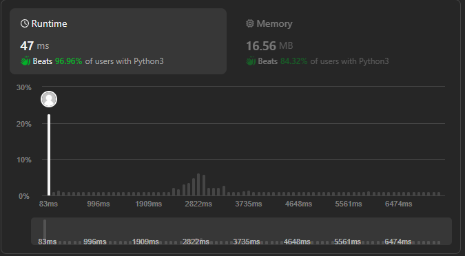

[Leetcode] 2597. The Number of Beautiful Subsets - Python, DP, Backtrack, 분할정복
리트코드 2597번 문제 풀이.
#Algorithm
접근
- 백트래킹
- DP
- 분할정복
백트래킹이나 dp로 푸는 경우 모두 1000ms 이상 시간 소요.
이 문제를 가장 빨리 푸는 핵심은 k 값의 나머지 값으로 문제를 분할해서 푸는 것임.
경우의 수 계산 시 세 가지 case 고려
- 해당 값을 불포함(skip)
- 이전 값과 함께 포함(차이 != k인 경우)
- 그 이전 값과 함께 포함(차이 == k인 경우)
풀이
class Solution:
def beautifulSubsets(self, nums: List[int], diff: int) -> int:
answer = 1
mod_dict = defaultdict(dict)
for num in nums:
mod = num % diff
mod_dict[mod][num] = mod_dict[mod].get(num, 0) + 1
for dict_ in mod_dict.values():
count, prev_count = 1, 0
memo = None
for k, v in sorted(dict_.items()):
skip = count
take = 2 ** v - 1
# possible to take
if memo is None or k - memo != diff:
take *= count
# impossible to take
else:
take *= prev_count
memo = k
prev_count = count
count = skip + take
answer *= count
return answer - 1
# print(Solution().beautifulSubsets([1,1,1,1,1], 2))
# print(Solution().beautifulSubsets([1,1,2,3], 1))
